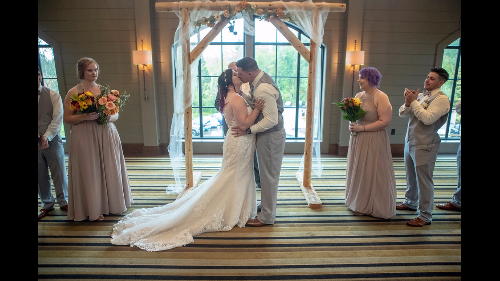

About Me
My name is Zachery Danis, I am 25 years old and recently got married to my wife, Jen. We became best friends in high school and dated off and on. This April we will be celebrating six years together. We have two dogs together, Tali a French Bulldog and Quinn a Boston Terrier. In November of 2017, Tali slipped a disk her spine which paralyzed her. It is easy to see in the video below that the paralysis has not slowed her down. I am originally from New Hampshire, I lived there for 18 years before leaving. I moved to Jacksonville, Florida when I was 21. My wife and I lived there for a over a year and eventually moved down to Fort Myers so we could attend college and be closer to family.
I am a big fan of music as well, since a young age I found myself listening to a wide variety of music. I still continue to listen to a very wide variety but I think of an genres I continue to bounce between Hip-Hip and Death Metal. Take a listen to some of my favorite artists, This is Sweatpants by Childish Gambino and Our Lady of Perpetual Sorrow by The Acacia Strain.
I am a Veteran of the U.S. Army, which is where I learned a love of working with computers. I served three and half years of activity duty, moving around to places such as South Carolina, Texas, South Korea, and Georgia. During my time in the Army I also received many tattoos; I currently have six tattoos which amount to roughly thirty-five hours.